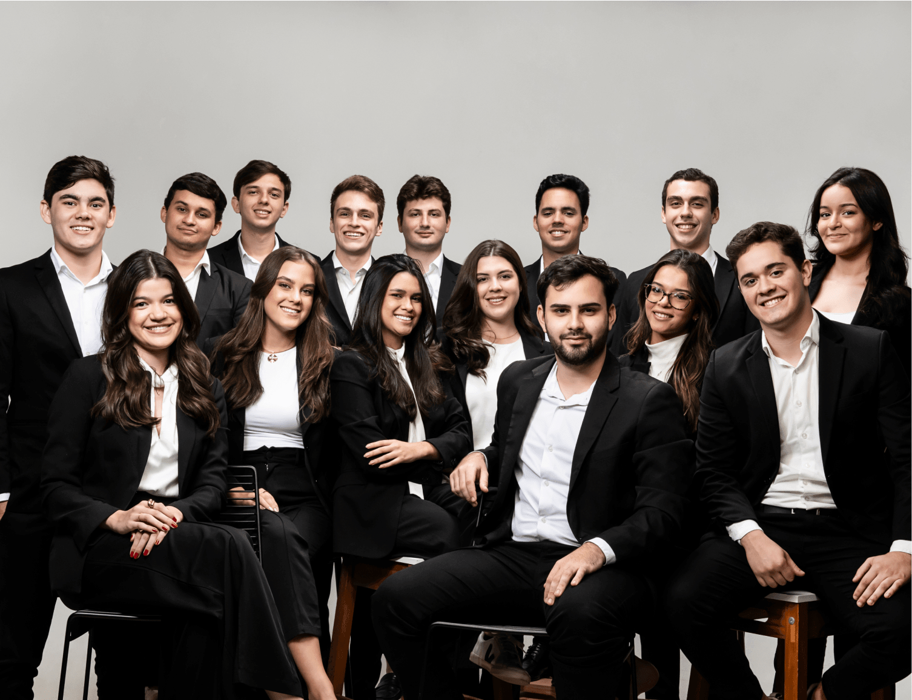
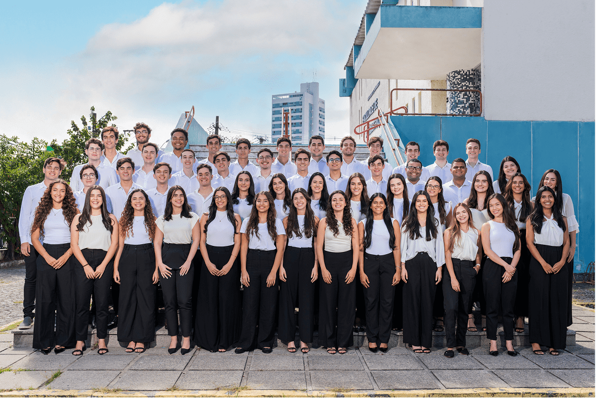
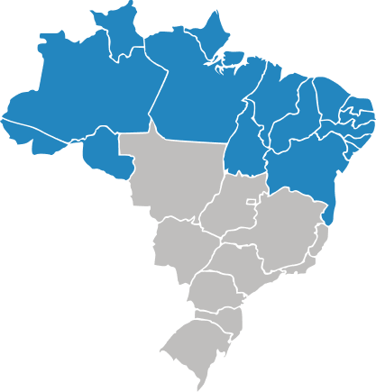
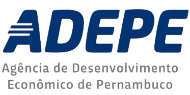

Transformamos negócios com soluções modernas e personalizadas
A FCAP JR. é uma consultoria júnior da Universidade de Pernambuco, especializada em transformar negócios com soluções acessíveis, modernas e orientadas a resultado.
Agendar diagnóstico gratuitoUma consultoria Júnior comprometida com a transformação de negócios
A FCAP JR. é a empresa júnior de consultoria empresarial da Universidade de Pernambuco. Somos formados por estudantes capacitados em administração e negócios, prontos para aplicar conhecimento acadêmico em projetos de alto impacto para empresas de todo o Brasil.

Missão
Gerar soluções de impacto para empresas e experiências que formem líderes.
Visão
Ser a referência em consultoria júnior no norte/nordeste, criando os melhores profissionais da região.
Nossos Valores
O que nós acreditamos é o que nos faz únicos
Meta é Piso
Somos inconformados e sempre queremos mais.
Aprender e Ensinar
Compartilhamos o nosso conhecimento e sempre buscamos novos.
Desenrola
Superamos situações adversas.
Eu Faço Agora
Não deixamos para depois.
Cliente é o foco
Entregamos resultados e não damos desculpas.


Pioneirismo na consultoria júnior
Empresa Júnior fundada no Norte/Nordeste
Empresa Júnior fundada no Brasil
Nossa Equipe
Nossa equipe é dividida em núcleos estratégicos que atuam de forma integrada. Essa organização garante eficiência e foco em resultados.
Institucional
Diretrizes estratégicas, representação legal e preservação da cultura FCAP JR.
Projetos
Excelência técnica na entrega de consultorias e foco na solução real do problema.
Negócios
Prospecção ativa, fechamento de vendas e expansão de mercado.
Gente e Gestão
Recrutamento, desenvolvimento de lideranças e engajamento do time.
Marketing
Gestão da marca, posicionamento digital e comunicação visual.
Inovação
Soluções criativas, automação e otimização de processos internos.
Prêmios e Reconhecimentos
Premiação Case Sucesso do Cliente
Prêmio de Inovação em Execução
Prêmio de Constância em Resultados
